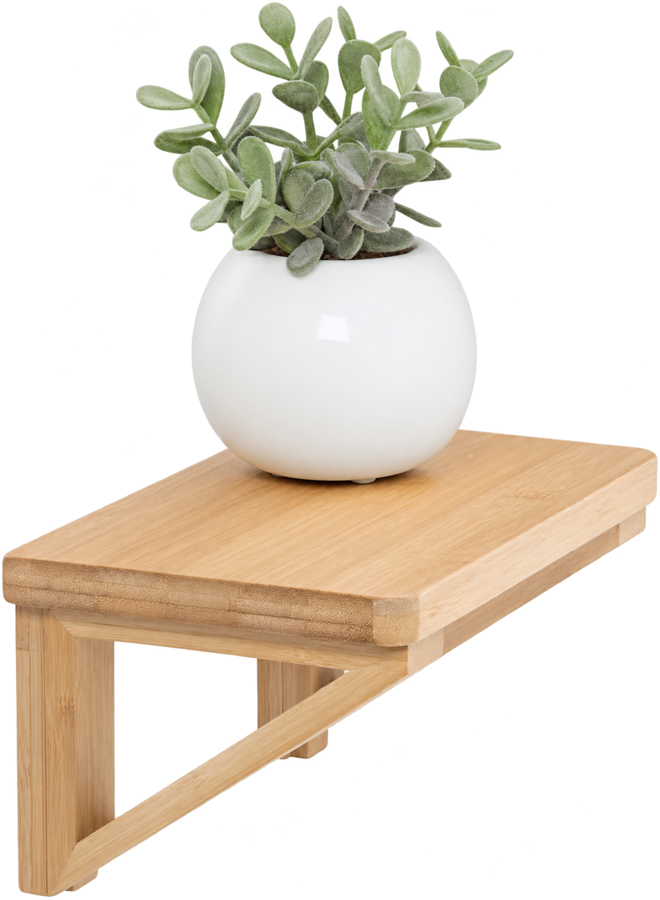
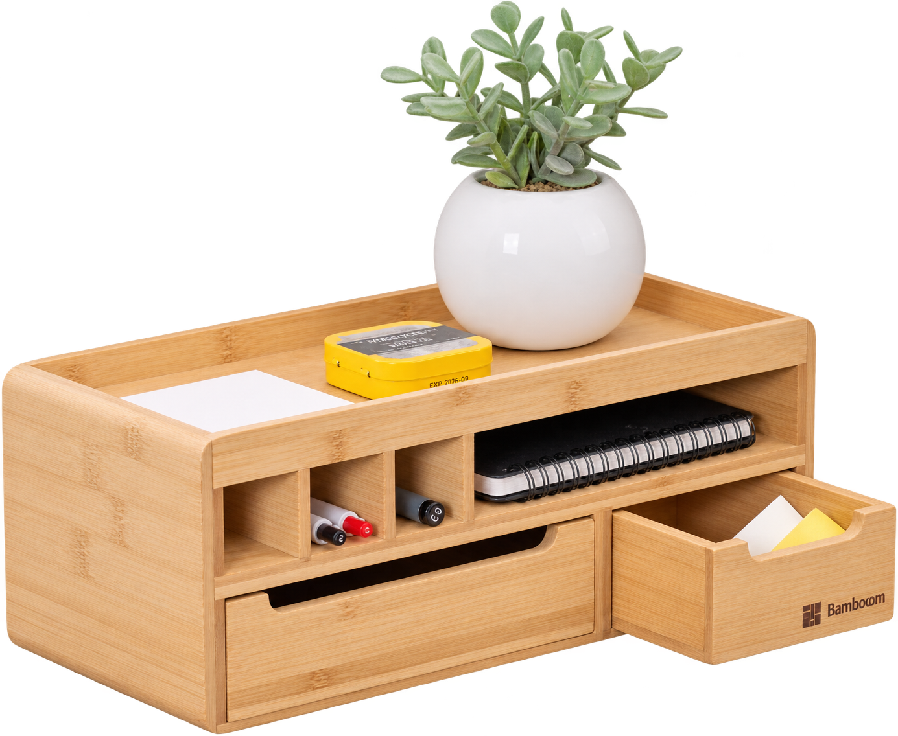
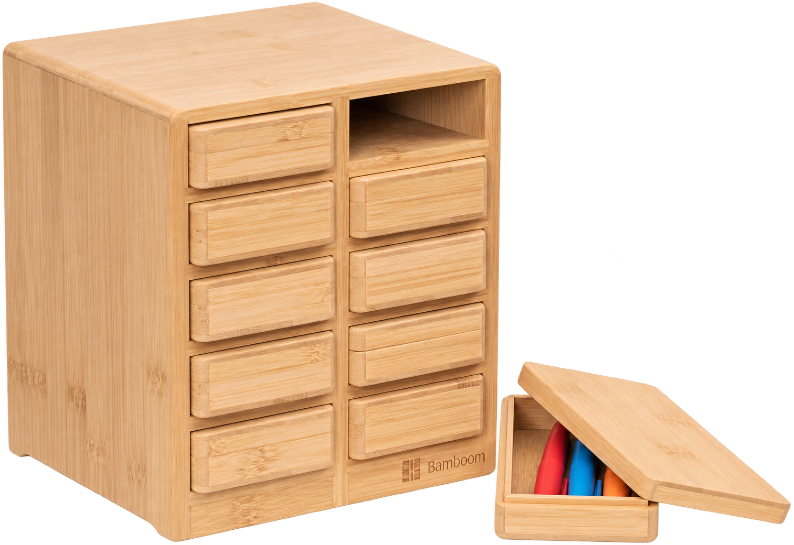
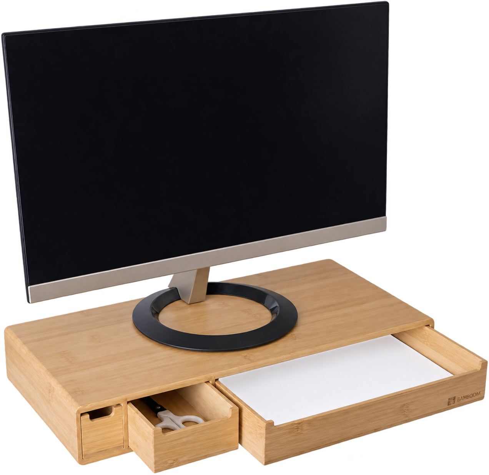
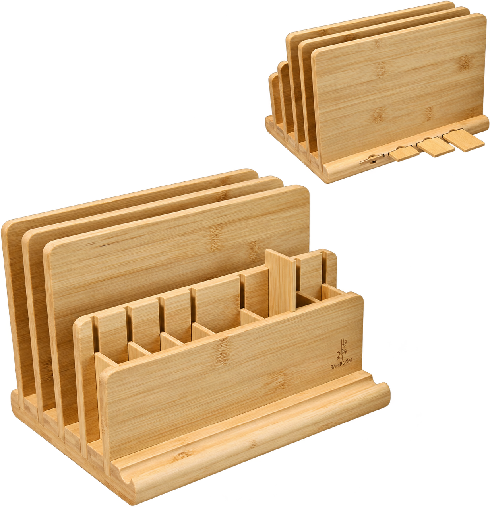
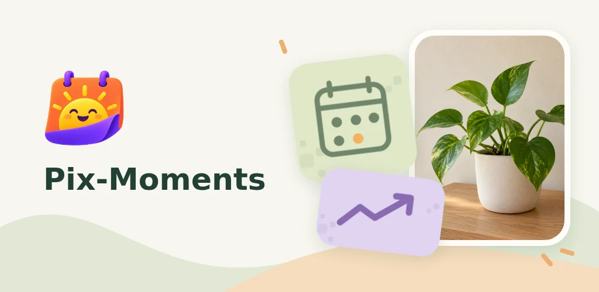
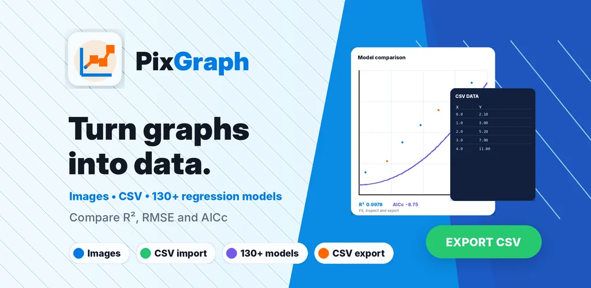
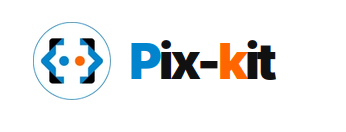

वस्तुएँ और वाणिज्य
हम भौतिक उत्पाद डिज़ाइन करते हैं, निर्माण का समन्वय करते हैं और ई-कॉमर्स के ज़रिए उनकी प्रस्तुति और बिक्री का प्रबंधन करते हैं।

Nihon Essentials Hub · जापान
हम उत्पाद डिज़ाइन, डिजिटल विकास और वितरण को जोड़कर उपयोगी विचारों को उन लोगों तक पहुँचाते हैं जिनके लिए वे बने हैं।
हमारा उद्देश्य जानेंस्वतंत्र सोच। व्यावहारिक परिणाम।
हमारा उद्देश्य
उपयोगी चीज़ें बनाना और उन्हें उनके दर्शकों तक पहुँचाने में मदद करना।
हम भौतिक उत्पाद डिज़ाइन करते हैं, निर्माण का समन्वय करते हैं और ई-कॉमर्स के ज़रिए उनकी प्रस्तुति और बिक्री का प्रबंधन करते हैं।
हम व्यावहारिक ऐप विकसित करते हैं और वितरण व प्रचार के ज़रिए स्वतंत्र सॉफ़्टवेयर का समर्थन करते हैं।
हम स्वतंत्र पुस्तकों और रचनात्मक कार्यों के प्रकाशन, वितरण और मार्केटिंग में मदद करते हैं।
BAMBOOM
रोज़मर्रा की ज़िंदगी के लिए डिज़ाइन, निर्माण और वितरण।

BAMBOOM
रोज़मर्रा की छोटी वस्तुओं और सजावटी सामान को रखने के लिए बाँस की दीवार पर लगने वाली शेल्फ, जिससे मेज़ और दूसरी सतहों पर जगह खाली रहती है।
और जानें
BAMBOOM
दराज़ और ट्रे वाला बाँस का ऑर्गनाइज़र, जिससे स्टेशनरी और रोज़मर्रा की छोटी वस्तुएँ हाथ के पास रहती हैं।
और जानें
BAMBOOM
दो स्तंभों में दस अलग-अलग दराज़ों वाली बाँस की डेस्क कैबिनेट स्टेशनरी और छोटे सामान को व्यवस्थित रखती है।
और जानें
BAMBOOM
A4 कागज़ और स्टेशनरी के लिए बने स्टोरेज वाला बाँस का मॉनिटर स्टैंड आपके कार्यस्थल को व्यवस्थित रखने में मदद करता है।
और जानें
BAMBOOM
हटाए जा सकने वाले विभाजकों वाला बाँस का डेस्क ऑर्गनाइज़र, जिसमें पेन और स्टेशनरी को ज़रूरत के अनुसार रखा जा सकता है।
और जानेंPix-kit
Pix-kit द्वारा विकसित और प्रकाशित उपयोगी टूल।

Pix-kit
Android के लिए Pix-Moments से इवेंट तक के दिन गिनें, बीते दिन देखें और फ़ोटो में प्रगति दर्ज करें। मनचाहे विजेट, रिमाइंडर और स्थानीय बैकअप। कोई विज्ञापन नहीं।
19 भाषाओं में उपलब्ध
हिन्दी में भी उपलब्ध

Pix-kit
Android पर PixGraph से चार्ट का डेटा निकालें। तस्वीरों से डेटा पाएँ, अक्ष कैलिब्रेट करें, 130 से अधिक रिग्रेशन मॉडल फ़िट करें और CSV फ़ाइलें एक्सपोर्ट करें।
अंग्रेज़ी में उपलब्ध
Nicolas Loffredo
नई दुनिया से मिलाती कहानियाँ और आगे बढ़ने का हौसला देते शब्द।
Nicolas Loffredo
अंग्रेज़ी संस्करण
An illustrated companion for growing up, with a father's practical advice on emotions, confidence, friendships and the little challenges of everyday life.
यह संस्करण देखेंNicolas Loffredo
अंग्रेज़ी संस्करण
A mysterious pebble changes Eldric's life. Alongside Aria, he must uncover the origin of extraordinary powers and escape the forces pursuing them through Mystoria.
यह संस्करण देखेंहमारे ब्रांड
हर ब्रांड हमारे काम के एक खास पहलू को सामने लाता है।
घर और कार्यस्थल के लिए बाँस के उत्पाद। सोच-समझकर किया गया डिज़ाइन, व्यावहारिक व्यवस्था और प्राकृतिक सामग्री का अपनापन।
जापान में पंजीकृत ट्रेडमार्क: 6953015 (शब्द चिह्न), 6953016 (चौकोर लोगो), 6953017 (पैटर्न)।
Amazon स्टोर पर जाएँ
रचने, सीखने और खोजने के लिए व्यावहारिक सॉफ़्टवेयर और डिजिटल टूल। Build. Learn. Play.
pix-kit Nihon Essentials Hub G.K. का ट्रेडमार्क है। जापान में पंजीकृत लोगो: 7094172 (वर्ग 9 और 41)। जापान में शब्द चिह्न का आवेदन: 2025-145412।
pix-kit.com पर जाएँ